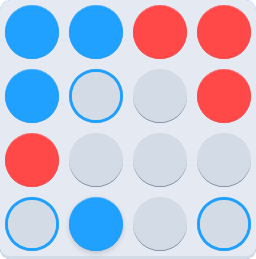
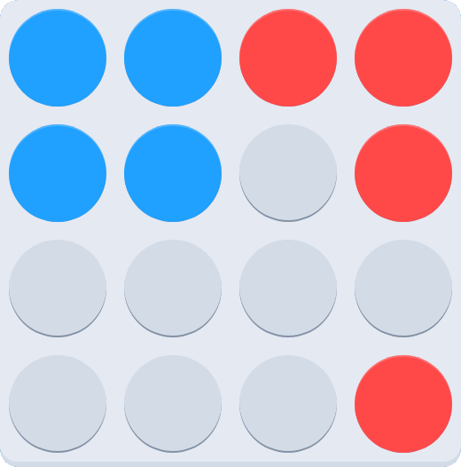
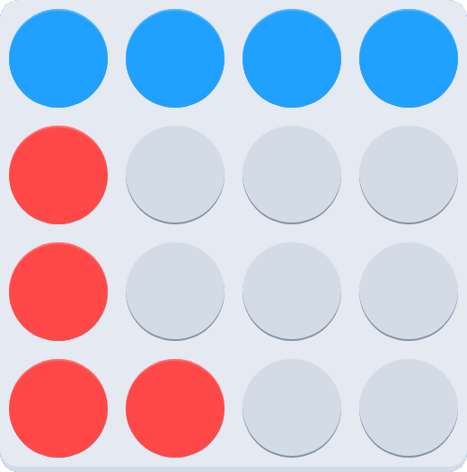
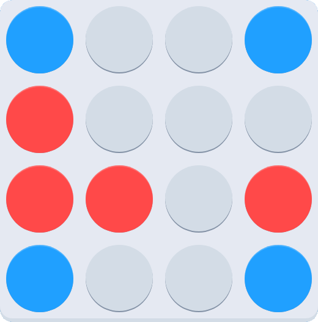

Welcome to DISKS! DISKS is a two-person puzzle game, so you'll need to grab a friend.
In DISKS, you control one color of disk (the default being blue), and you must move your disks
to victory! Disks move the maximum distance either horizontally or vertically. A visual indicator
will help you if you touch a disk, like shown below with the disk in the bottom center.

In DISKS, there are three patterns you can move your pieces into to win the game. Take note that
each of these methods include one or more corners, so securing a corner is extremely important
for winning the game, and making sure your opponent doesn't! These patterns are shown in order
of increasing difficulty.
The first of these patterns is a 2x2 cube in any corner of the board. Forming a cube that's not in
a corner is impressive, but it doesn't win the game! An example is shown below with the blue color.

The second of these patterns is a 4x1 line along any of the edges. Like the previous method, the line
must be on an edge to win the game. An example is shown below with the blue color.

The third, and most difficult, pattern to win the game is having a disk in each corner of the map. Again,
an example is shown below with the blue color.

That's all there is to DISKS! Over time, you'll develop strategies and play styles, but that's best left
to discovering on your own. Hope you enjoy DISKS!
2017 Michael Bullington
The ad below helps pay for my college. Thank you. 😊